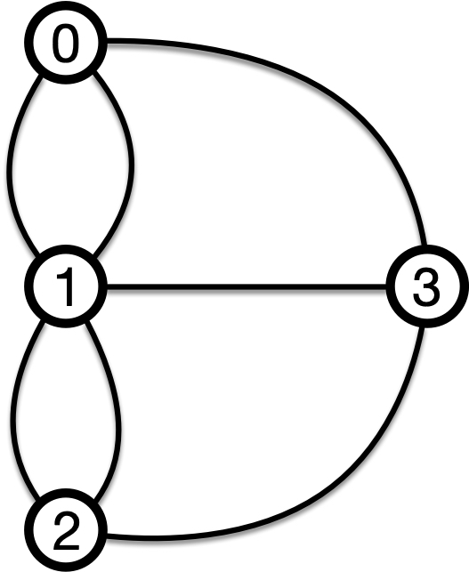
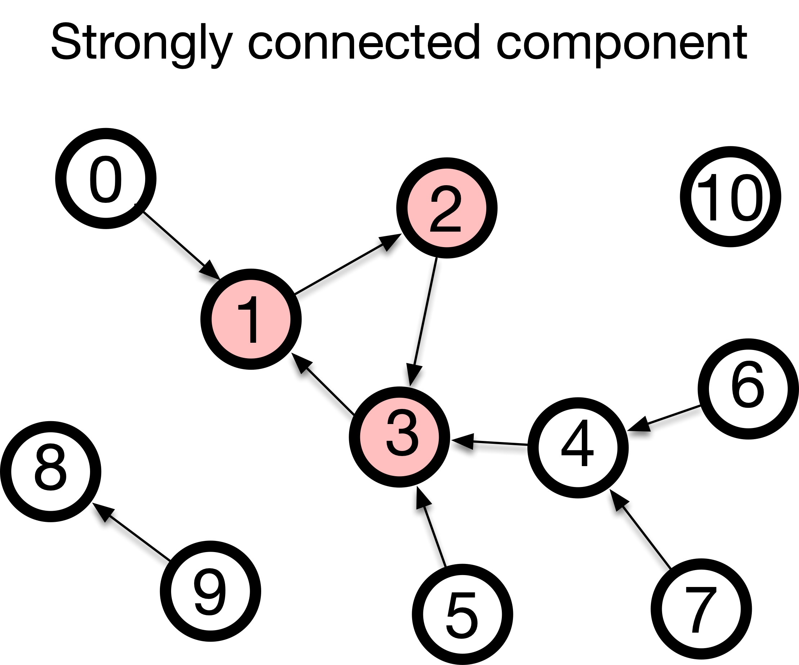

9 Small-World Networks: Core Concepts
9.1 What to learn in this module
In this module, we will learn small-world experiments and conduct a small small-world experiment . We will learn: - Small-world experiment by Milgram - Different concepts of distance: path, walks, circuits, cycles, connectedness - How to load a large sparse network efficiently into memory - How to measure a distance between two nodes using igraph - Keywords: small-world experiment, six degrees of separation, path, walks, circuits, cycles, connectedness, connected component, weakly connected component, strongly connected component, compressed sparse row format.
9.2 Small-world experiment
How far are two people in a social network? Milgram and his colleagues conducted a series of expriment to find out in the 1960s.

The experiment went as follows: 1. Milgram first sent out packets to randomly selected people in Omaha, Nebraska, and Wichita, Kansas. 2. The recipient was asked to send the packet to the target person in Boston if they knew them. If not, they were to forward it to someone they knew on a first-name basis who might know the target. 3. The recipient continued to forward the packet to their acquaintances until it reached the target.
The results were surprising: out of the 160 letters sent, 64 successfully reached the target person by the chain of nearly six people, which was later called six degrees of separation. The results imply that, despite the fact that there were hundreds of millions of people in the United States, their social network was significantly compact, with two random people being connected to each other in only a few steps.
The term “Six degrees of separation” is commonly associated with Milgram’s experiment, but Milgram never used it. John Guare coined the term for his 1991 play and movie “Six Degrees of Separation.”
The results were later confirmed independently.
Yahoo research replicate the Milgram’s experiment by using emails. Started from more than 24,000 people, only 384 people reached the one of the 18 target person in 13 countries. Among the successful ones, the average length of the chain was about 4. When taken into account the broken chain, the average length was estimated between 5 and 7.{footcite}
goel2009socialResearchers in Facebook and University of Milan analyzed the social network n Facebook, which consisted of 721 million active users and 69 billion friendships. The average length of the shortest chain was found to be 4.74. {footcite}
backstrom2012four
9.3 Wikirace: Experiencing Small-World Networks
Let us feel how small a large network can be by playing the Wikirace game.

9.3.1 What’s next
At the end of the module, we will measure the average path length in a social network. Before jumping on, let us arm with some coding techniques to handle the network in the next two sections.
9.4 Walks, Trails, Paths, and Connectedness
9.4.1 Walks, Trails, Paths
While we have already used the term path, let us make clear its definition, together with other related terms.
A walk is a sequence of nodes that are connected to form a continous route in a network. For instance, walk (0, 1, 2, 3) is a walk in the graph of the bridges of Konigsberg. But the sequence (0,2,3,1) is not a walk, because the node 0 is not directly connected to node 2.
A trail is a walk with no repeated edge. For instance, walk (0, 1, 2, 3) is also a trail as it does not cross the same edge twice. But walk (0,2,3,1,3) is not a trail due to the repeated edge (1,3).
A path is a walk without repeated node. For instance, walk (0,1,2,3) is a path. But walk (0, 1, 2, 1, 2, 3) is not a path due to the repeated node 1 and 2.
When a walk starts and ends at the same node, it is called a **loop*. If the loop is a trail, it is called a circuit. If the loop is a path, it is called a cycle.
Question: Is a path always a trail, and is a trail always a path?

- Shortest Path is the path with the smallest number of edges (or nodes) between two nodes. A shortest path from node 0 to 2 is (0, 1, 2). Two nodes can have multiple shortest paths e.g., (0, 3, 2).
- The shortest path length is the number of edges in the shortest path, not the number of nodes! 👈👈
Shortest trails and shortest walks are fundamentally equivalent to shortest paths. A shortest trail must visit each node only once (otherwise it would not be the shortest), and similarly, a shortest walk does not repeat nodes (otherwise it would not be the shortest), both forming a shortest path.
9.4.2 Connectedness
- A network is connected if there is a path between every pair of nodes.
- A network is disconnected if there is no path between some pairs of nodes.
- A connected component of a network is a set of nodes that are connected to each other.
- The giant component of a network is the largest connected component that contains a significant fraction of nodes in the network (in order of the number of nodes).

9.4.3 Connectedness in directed networks
We call a network is directed if the edges have a direction. Example directed networks include the network of Web pages, the network of friendships on X, the network of citations on academic papers.
In a directed network, a walk must follow the edge directions. Paths, trails, and loops extend similarly to directed networks. But one thing to keep in mind: a walk may not be reversible, meaning there can be a walk from one node to another but not vice versa.
This leads to two different types of connectedness as follows:
- Strong connectedness: A directed network is said to be strongly connected if there is a path from every node to every other node.
- Weak connectedness: A directed network is said to be weakly connected if there is a path from every node to every other node on its undirected counterpart.

Question: Is a strongly-connected component always a weakly-connected component?
In the next section, we will learn how to compute the shortest paths and connected components of a network using a library igraph.